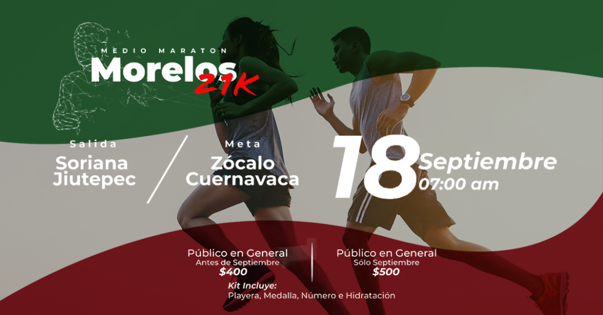

Ricardo González
Líder del proyecto SIGEV
Jatziry Herrera
Diseñadora del proyecto SIGEV

Uriel Gómez
Programador del proyecto SIGEV

Janeth Hernández
Programadora del proyecto SIGEV
🎡 JUGUETON 🎡
Juguetón: Un regalo, una sonrisa es una campaña anual mexicana organizada por Fundación Azteca cuyo fin es recaudar juguetes para niños de escasos recursos en México. Se lleva a cabo desde el año 1996, precediendo a la cadena de jugueterías de la ecuatoriana Corporación Favorita del mismo nombre y el evento Teletón organizado por su rival, Televisa.Se lleva a cabo del primero de diciembre al 5 de enero del año 1996 y, aunque se habilitan cuentas bancarías para donación monetaria, las donaciones se hacen mayoritariamente en especie. Su nombre es un juego de palabras al hacer la contracción de las palabras juguete y teletón.
🏃 MORELOS 21K 🏃
- FECHA: 18 septiembre 2022
- HORA: 7:00 AM
- SALIDA: Soriana Jiutepec, Morelos
- META: Zócalo Cuernavaca, Morelos
- DISTANCIA: 21K
- RAMAS: VARONIL Y FEMENIL
- CATEGORIAS:
- JUVENIL 15-17 AÑOS
- LIBRE 18-39 AÑOS
- MASTER 40-49 AÑOS
- VETERANOS 50-59 AÑOS
- VETERANOS PLUS 60 AÑOS Y MAS
- *SI NO HAY MAS DE 50 INSCRITOS EN LA CATEGORÍA, PARTICIPARAN EN LA CATEGORIA INFERIOR INMEDIATA

👣 TELETON 👣
El Teletón es un evento televisivo transmitido en varios países con el objetivo de recaudar fondos para ayudar a personas con discapacidad. Durante el evento, se presentan actuaciones artísticas y testimonios, se transmiten reportajes y documentales, y se habilitan líneas telefónicas y plataformas en línea para hacer donaciones. El Teletón busca financiar servicios médicos, rehabilitación y educación para las personas con discapacidad, además de promover la inclusión y sensibilizar a la sociedad sobre esta temática. Es considerado uno de los eventos benéficos más importantes en los países donde se realiza.